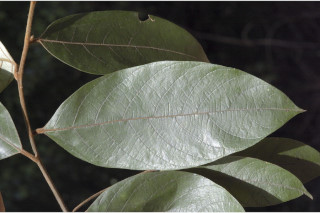
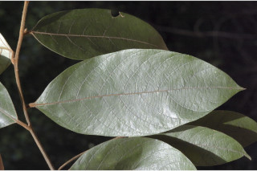

Images :

 

| Habit : | Trees up to 8 m tall. |
| Leaves : | Simple , alternate , spiral ; petiole 1.2 cm long, fulvous tomentose ; lamina 13 x 6.5 cm, elliptic-oblong , apex sharp acuminate , base acute , nerves fulvous tomentose on both sides, glaucous beneath; midrib raised; secondary_nerves ca. 8 pairs, tertiary_nerves strong, obliquely_percurrent . |
| Inflorescence / Flower : | Flowers in short axillary fulvous panicles of cymes with prominent bracts and bracteoles . |
| Fruit and Seed : | Drupe ; seed 1. |